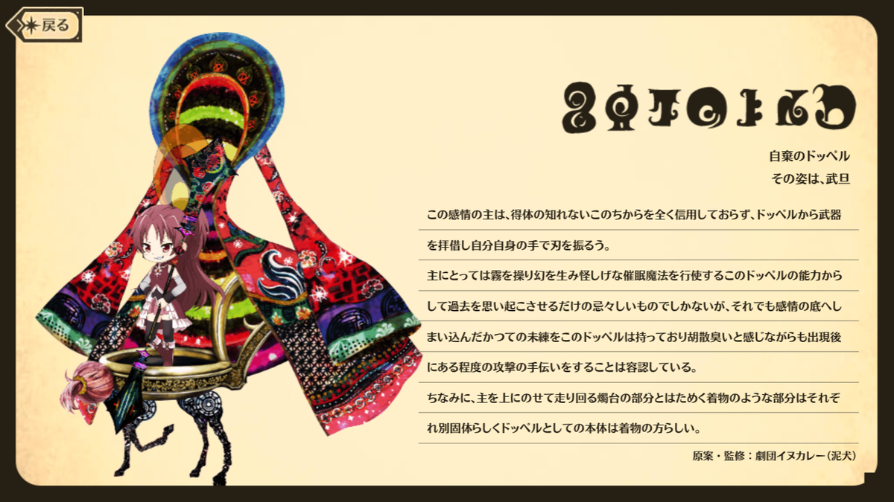
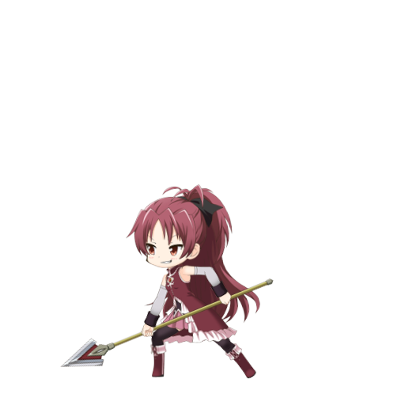

Kyoko is a Magical Girl from Kazamino City who doesn't seem to go to school or have a home. Defiant and pragmatic, she often butts heads with other Magical Girls. She wields a multi-jointed spear, and can create magical barriers. She is always snacking.

| STATS | HP | ATK | DEF |
|---|---|---|---|
| Initial | 4981 | 2114 | 1603 |
| Max at ★4 | 17931 | 7610 | 5770 |
| Max at ★5 | 22580 | 9592 | 7268 |
★4: Blast Damage UP [VII] & Damage Cut [VII]
★5: Blast Damage UP [IX] & Damage Cut [IX]
★4: Attribute Strengthened Damage All Enemies [V] & Attack UP (Self / 3 T)
★5: Attribute Strengthened Damage All Enemies [VII] & Attack UP (Self / 3 T) & Blast Damage UP (All / 3 T)
Attribute Strengthened Damage All Enemies [IX] & Attack UP (Self / 3 T) & Blast Damage UP (All / 3 T)